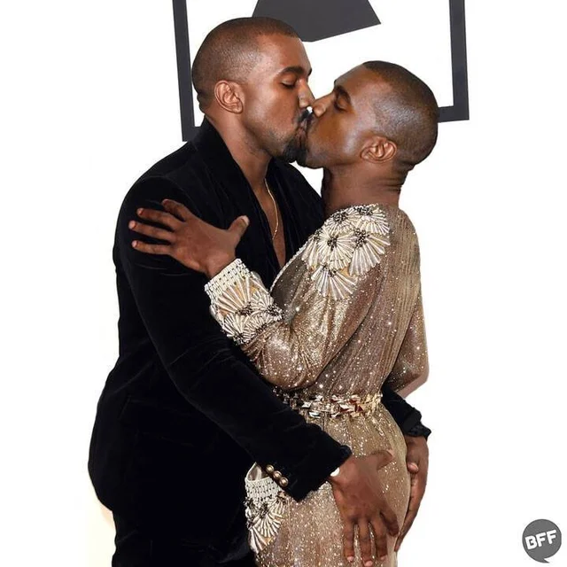

Karrière 1996–2008 West vokste opp i Chicago-området og gjorde først karriere som produsent for r&b- og hiphop-artister som Talib Kweli, Brandy, Ludacris, Mariah Carey, Alicia Keys, Janet Jackson og Jay-Z. Hans første solosingle «Through The Wire» (2003) handler om en nesten-fatal bilulykke som West var involvert i. Den og de enda større hitene «All Falls Down» og «Jesus Walks» er hentet fra debutalbumet The College Dropout (2004). Late Registration (2005) ble en kritikerrost storselger verden over, takket være hits som «Diamonds From Sierra Leone», «Gold Digger», «Heard ’Em Say» og «Touch the Sky». Kanye West står også bak suksessen til John Legend, som fikk suksessalbumet sitt Get Lifted utgitt på plateselskapet hans GOOD Music. Albumet Graduation (2007) ga ham slagere med «Stronger» og «Good Life», og 808s & Heartbreak (2008) med «Love Lockdown» og «Heartless». 2010–2011 I 2010 utga West det femte studioalbumet sitt, My Beautiful Dark Twisted Fantasy til svært gode kritikker. Norske musikkjournalister kåret det til årets beste gjennom «Kritikertoppen 2010», og enkelte internasjonale kritikere hevdet at albumet var hans beste noensinne. My Beautiful Dark Twisted Fantasy ble fulgt opp året etter med Watch the Throne, som var et samarbeid med rapperen og forbildet Jay-Z. Albumet inneholdt blant annet hiten «Ni**as in Paris». 2013–2016 I 2013 utga West det sjette studioalbumet sitt: Yeezus er artistens mest omstridte album, med et alternativt, mørkere og mer kompromissløst lydbilde enn tidligere. Tre år senere ble The Life of Pablo utgitt eksklusivt på strømmetjenesten Tidal. Albumet, som er oppkalt etter Pablo Picasso, ble møtt med både lunkne og svært entusiastiske anmeldelser, der framhevinger av artistens allsidighet går igjen. 2017–2019  I kjølvannet av utgivelsen av The Life of Pablo kom det meldinger om at Kanye West slet med personlige problemer. Deler av turneen ble avlyst og West trakk seg midlertidig tilbake fra offentligheten. Da han kom tilbake uttrykte han, til mye kritikk, delvis støtte til den amerikanske presidenten Donald Trump. I mai og juni 2018 var han plutselig musikalsk tilbake for fullt med utgivelse av fem produserte album i løpet av fem uker. Den første utgivelsen var Pusha T sitt DAYTONA, etterfulgt av Wests eget album ye og Kid Cudi-samarbeidet KIDS SEE GHOSTS. Så kom Nas med albumet Nasir og til slutt Teyana Taylors KTSE. Alle albumene ble utgitt på fredager, hadde syv til åtte spor og ble godt mottatt. I september 2018, kunngjorde Kanye at han skulle komme ut med et nytt album, Yandhi, men istedenfor begynte Kanye å opptre i forskjellige amerikanske kirker, opptredener han kalte for «Sunday Services». Et år senere kom Kanye med det religiøst tematiserende albumet JESUS IS KING. Albumet hadde flere sanger fra Yandhi som hadde blitt omgjort for å reflektere albumets tema. Albumet ble møtt med relativt dårlige tilbakemeldinger fra både kritikere og fans, og er ansett som et av hans svakere utgivelser. 2020–2021 idlig i 2020 begynte spekulasjon om at Kanye holdt på med et nytt album, noe som ble forsterket av utgivelsen av singelen «Wash Us In The Blood». Kanye West bekreftet ryktene på det sosiale nettverket Twitter i juli, men istedenfor ny musikk kom det en rekke større og mindre skandaler. West hevdet blant annet at han i flere år hadde prøvd å skille seg fra sin daværende kone, realitykjendisen Kim Kardashian, og at svigerfamilien hadde forsøkt å få han fengslet. Dette ble etterfulgt av at han stilte som uavhengig kandidat til det amerikanske presidentvalget i 2020. Etter en lengre periode med mange offentlige konflikter, en mye omtalt skilsmisse og mange utsettelser på utgivelsesdatoer, kom albumet Donda i august 2021. Albumet, oppkalt etter Kanye Wests avdøde mor, inneholder hele 27 låter og er gjestet av en rekke av de mest toneangivende rapperne og produsentene innen dagens hiphopscene. Donda skilte kritikerne og ble møtt med varierte tilbakemeldinger. En majoritet av anmelderne la vekt på at albumet var for langt og virket ufokusert. Personlig Kanye West var gift med realitykjendisen Kim Kardashian, som han har fire barn sammen med. Ekteparet var særdeles mye omtalt i internasjonal sladrepresse, og Kanye ble etter hvert en del av det populære realityprogrammet Keeping Up with the Kardashians. Paret ble skilt i 2021. Samme år søkte Kanye West om å offisielt få endre navnet sitt til kun Ye, uten noe mellomnavn eller etternavn.
Karrière 1996–2008 West vokste opp i Chicago-området og gjorde først karriere som produsent for r&b- og hiphop-artister som Talib Kweli, Brandy, Ludacris, Mariah Carey, Alicia Keys, Janet Jackson og Jay-Z. Hans første solosingle «Through The Wire» (2003) handler om en nesten-fatal bilulykke som West var involvert i. Den og de enda større hitene «All Falls Down» og «Jesus Walks» er hentet fra debutalbumet The College Dropout (2004). Late Registration (2005) ble en kritikerrost storselger verden over, takket være hits som «Diamonds From Sierra Leone», «Gold Digger», «Heard ’Em Say» og «Touch the Sky». Kanye West står også bak suksessen til John Legend, som fikk suksessalbumet sitt Get Lifted utgitt på plateselskapet hans GOOD Music. Albumet Graduation (2007) ga ham slagere med «Stronger» og «Good Life», og 808s & Heartbreak (2008) med «Love Lockdown» og «Heartless». 2010–2011 I 2010 utga West det femte studioalbumet sitt, My Beautiful Dark Twisted Fantasy til svært gode kritikker. Norske musikkjournalister kåret det til årets beste gjennom «Kritikertoppen 2010», og enkelte internasjonale kritikere hevdet at albumet var hans beste noensinne. My Beautiful Dark Twisted Fantasy ble fulgt opp året etter med Watch the Throne, som var et samarbeid med rapperen og forbildet Jay-Z. Albumet inneholdt blant annet hiten «Ni**as in Paris». 2013–2016 I 2013 utga West det sjette studioalbumet sitt: Yeezus er artistens mest omstridte album, med et alternativt, mørkere og mer kompromissløst lydbilde enn tidligere. Tre år senere ble The Life of Pablo utgitt eksklusivt på strømmetjenesten Tidal. Albumet, som er oppkalt etter Pablo Picasso, ble møtt med både lunkne og svært entusiastiske anmeldelser, der framhevinger av artistens allsidighet går igjen. 2017–2019